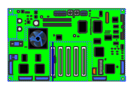
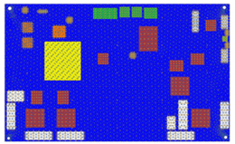
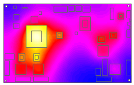

|
Tip |
Product improvements are greatly influenced by a constant optimization in the thermal management of the PC assemblies. PCB Exchange helps integrate electrical and mechanical designers together with thermal and flow analysts. |
You have been given the latest revision of a PCA in an ECAD format and have been asked to perform a preliminary thermal analysis on it.
You must:
Import a filtered version of the ECAD design.
Define the thermal relevance of its components and their thermal weight.
Update your component library.
Instruct NX PCB Exchange and NX Electronic Systems Cooling to automatically mesh and constrain the model with all necessary boundary conditions.
Run a thermal analysis and suggest improvements to the electrical team.
In this activity, you will learn how to:
Define a component library.
Use an imported ECAD model to generate a thermal analysis in NX Electronic Systems Cooling (ESC).


